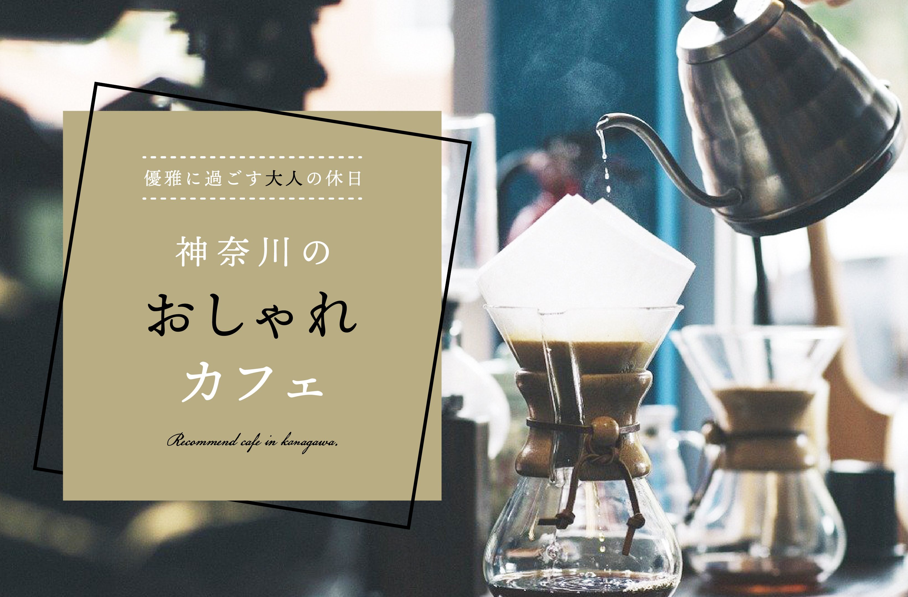

デザイン案1

デザイン案2
| 作品名 | カフェ特集バナー(架空) |
|---|---|
| サイズ | 820×540px |
| 制作期間 | 10時間（2日作業） |
| 担当作業 | デザイン |
| 制作の目的 | 特集ページへの誘導し、実際にカフェに訪れてもらう |
| コンセプト | 普段は忙しい20代から30代の若い社会人が充実した休日となるよう、ゆったり落ち着いて過ごせるカフェをまとめた特集ページへ誘導するためのサイト内バナー |
| ターゲット | 20代から40代の男女、一人暮らしやカップルなどフットワークの軽い方など |
| 作品説明 | キュレーションメディアのサイトがあると仮定し、その中の特集ページへの誘導を促すバナー広告を作成しました。 |
| デザイン案2はもう少し柔らかめを意識して作成しました。背景は明るく見やすい黄色を使用しました。優雅さのイメージから曲線を想像し、テキストをゆったりとした曲線に配置しました。おしゃれカフェの部分はテキストをベタと線でずらし、左右には放射状のあしらいを添えました。 | |
| デザイン案1は大人な感じを強調し、写真もやや暗めの写真を使用。文字に対する背景色は写真と反対に明るめのカフェをイメージさせる色としました。 文字は白黒にし、強調したい「大人」や「おしゃれ」は黒色とし、スクリプト体の英文を添え、大人らしさを強調しました。 背景色の四角形だけでは物足りなかったため、黒色の枠を作り角度と遠近をつけてあしらいました。 |
|
| 使用ツール | Photoshop,Illustrator |